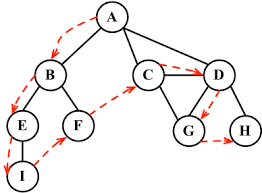
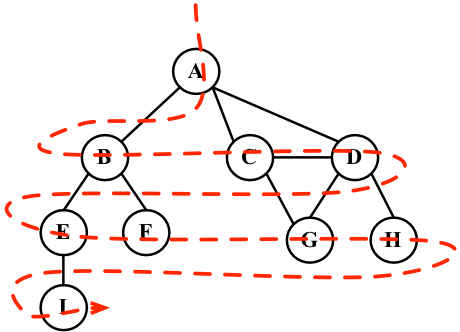

Algorithm: Graph
DFS and BFS
DFS with recursive, while BFS with queue, caution for loops.
DFS pseudocode steps:
I. if node is Null return
II. access node
III. access left node, recursive
IV. access right node, recursive

BFS pseudocode steps:
I. create queue
II. if node is not Null
III. push left/right node in queue
IV. pop queue, goto step II

Shortest Path Algorithm
Floyd Warshall Algorithm
All Pairs Shortest Path problem
We initialize the solution matrix same as the input graph matrix as a first step. Then we update the solution matrix by considering all vertices as an intermediate vertex. The idea is to one by one pick all vertices and updates all shortest paths which include the picked vertex as an intermediate vertex in the shortest path. When we pick vertex number k as an intermediate vertex, we already have considered vertices {0, 1, 2, .. k-1} as intermediate vertices. For every pair (i, j) of the source and destination vertices respectively, there are two possible cases.
1) k is not an intermediate vertex in shortest path from i to j. We keep the value of dist[i][j] as it is.
2) k is an intermediate vertex in shortest path from i to j. We update the value of dist[i][j] as dist[i][k] + dist[k][j] if dist[i][j] > dist[i][k] + dist[k][j]
The following figure shows the above optimal substructure property in the all-pairs shortest path problem.
1
2
3
4
5
6
7
8
9
10
11
12
13
14
15
16
17
18
19
20
21
22
23
24
25
26
27
28
29
30
31
32
33
34
35
36
37
38
39
40
41
42
43// Solves the all-pairs shortest path problem using Floyd Warshall algorithm
void floydWarshall (int graph[][V])
{
/* dist[][] will be the output matrix that will finally have the shortest
distances between every pair of vertices */
int dist[V][V], i, j, k;
/* Initialize the solution matrix same as input graph matrix. Or
we can say the initial values of shortest distances are based
on shortest paths considering no intermediate vertex. */
for (i = 0; i < V; i++)
for (j = 0; j < V; j++)
dist[i][j] = graph[i][j];
/* Add all vertices one by one to the set of intermediate vertices.
---> Before start of an iteration, we have shortest distances between all
pairs of vertices such that the shortest distances consider only the
vertices in set {0, 1, 2, .. k-1} as intermediate vertices.
----> After the end of an iteration, vertex no. k is added to the set of
intermediate vertices and the set becomes {0, 1, 2, .. k} */
for (k = 0; k < V; k++)
{
// Pick all vertices as source one by one
for (i = 0; i < V; i++)
{
// Pick all vertices as destination for the
// above picked source
for (j = 0; j < V; j++)
{
// If vertex k is on the shortest path from
// i to j, then update the value of dist[i][j]
if (dist[i][k] + dist[k][j] < dist[i][j]) {
// here we can add an array to record the path
// path[j] = k;
dist[i][j] = dist[i][k] + dist[k][j];
}
}
}
}
// Print the shortest distance matrix
printSolution(dist);
}Bellman–Ford Algorithm
Single Source Shortest Path
1) This step initializes distances from source to all vertices as infinite and distance to source itself as 0. Create an array dist[] of size |V| with all values as infinite except dist[src] where src is source vertex.
2) This step calculates shortest distances. Do following |V|-1 times where |V| is the number of vertices in given graph.
…..a) Do following for each edge u-v
………………If dist[v] > dist[u] + weight of edge uv, then update dist[v]
………………….dist[v] = dist[u] + weight of edge uv
3) This step reports if there is a negative weight cycle in graph. Do following for each edge u-v
……If dist[v] > dist[u] + weight of edge uv, then “Graph contains negative weight cycle”
The idea of step 3 is, step 2 guarantees shortest distances if graph doesn’t contain negative weight cycle. If we iterate through all edges one more time and get a shorter path for any vertex, then there is a negative weight cycle
How does this work? Like other Dynamic Programming Problems, the algorithm calculate shortest paths in bottom-up manner. It first calculates the shortest distances which have at-most one edge in the path. Then, it calculates shortest paths with at-most 2 edges, and so on. After the i-th iteration of outer loop, the shortest paths with at most i edges are calculated. There can be maximum |V| – 1 edges in any simple path, that is why the outer loop runs |v| – 1 times. The idea is, assuming that there is no negative weight cycle, if we have calculated shortest paths with at most i edges, then an iteration over all edges guarantees to give shortest path with at-most (i+1) edges (Proof is simple, you can refer this or MIT Video Lecture)1
2
3
4
5
6
7
8
9
10
11
12
13
14
15
16
17
18
19
20
21
22
23
24
25
26
27
28
29
30
31
32
33
34
35
36
37
38
39
40
41
42
43
44
45
46
47
48
49// The main function that finds shortest distances from src to
// all other vertices using Bellman-Ford algorithm. The function
// also detects negative weight cycle
void BellmanFord(struct Graph* graph, int src)
{
int V = graph->V;
int E = graph->E;
int dist[V];
// Step 1: Initialize distances from src to all other vertices
// as INFINITE
for (int i = 0; i < V; i++)
dist[i] = INT_MAX;
dist[src] = 0;
// Step 2: Relax all edges |V| - 1 times. A simple shortest
// path from src to any other vertex can have at-most |V| - 1
// edges
for (int i = 1; i <= V - 1; i++) {
for (int j = 0; j < E; j++) {
int u = graph->edge[j].src;
int v = graph->edge[j].dest;
int weight = graph->edge[j].weight;
if (dist[u] != INT_MAX && dist[u] + weight < dist[v]) {
// here we can add an array to record the path
// path[v] = u;
dist[v] = dist[u] + weight;
}
}
}
// Step 3: check for negative-weight cycles. The above step
// guarantees shortest distances if graph doesn't contain
// negative weight cycle. If we get a shorter path, then there
// is a cycle.
for (int i = 0; i < E; i++) {
int u = graph->edge[i].src;
int v = graph->edge[i].dest;
int weight = graph->edge[i].weight;
if (dist[u] != INT_MAX && dist[u] + weight < dist[v]) {
printf("Graph contains negative weight cycle");
return; // If negative cycle is detected, simply return
}
}
printArr(dist, V);
return;
}
Detect Cycle
Kahn’s algorithm
Steps involved in finding the topological ordering of a DAG(Directed Acyclic Graph):
Step-1: Compute in-degree (number of incoming edges) for each of the vertex present in the DAG and initialize the count of visited nodes as 0.
Step-2: Pick all the vertices with in-degree as 0 and add them into a queue (Enqueue operation)
Step-3: Remove a vertex from the queue (Dequeue operation) and then.- Increment count of visited nodes by 1.
- Decrease in-degree by 1 for all its neighboring nodes.
- If in-degree of a neighboring nodes is reduced to zero, then add it to the queue.
Step 5: Repeat Step 3 until the queue is empty.
Step 5: If count of visited nodes is not equal to the number of nodes in the graph then the topological sort is not possible for the given graph. There is a loop when the queue size not equal the vertices.union–find data structure
A disjoint-set data structure is a data structure that keeps track of a set of elements partitioned into a number of disjoint (non-overlapping) subsets. A union-find algorithm is an algorithm that performs two useful operations on such a data structure:
Find: Determine which subset a particular element is in. This can be used for determining if two elements are in the same subset.
Union: Join two subsets into a single subset.naive way
1
2
3
4
5
6
7
8
9
10
11
12
13
14
15
16
17
18
19
20
21
22
23
24
25
26
27
28
29
30
31
32
33
34
35
36
37
38
39
40
41
42
43// A utility function to find the subset of an element i
int find(int parent[], int i)
{
if (parent[i] == -1)
return i;
return find(parent, parent[i]);
}
// A utility function to do union of two subsets
void Union(int parent[], int x, int y)
{
int xset = find(parent, x);
int yset = find(parent, y);
if(xset!=yset){
parent[xset] = yset;
}
}
// The main function to check whether a given graph contains
// cycle or not
int isCycle( struct Graph* graph )
{
// Allocate memory for creating V subsets
int *parent = (int*) malloc( graph->V * sizeof(int) );
// Initialize all subsets as single element sets
memset(parent, -1, sizeof(int) * graph->V);
// Iterate through all edges of graph, find subset of both
// vertices of every edge, if both subsets are same, then
// there is cycle in graph.
for(int i = 0; i < graph->E; ++i)
{
int x = find(parent, graph->edge[i].src);
int y = find(parent, graph->edge[i].dest);
if (x == y)
return 1;
Union(parent, x, y);
}
return 0;
}optimize with rank and path compression
1
2
3
4
5
6
7
8
9
10
11
12
13
14
15
16
17
18
19
20
21
22
23
24
25
26
27
28
29
30
31
32
33
34
35
36
37
38
39
40
41
42
43
44
45
46
47
48
49
50
51struct subset
{
int parent;
int rank;
};
// Creates a graph with V vertices and E edges
struct Graph* createGraph(int V, int E)
{
struct Graph* graph = (struct Graph*) malloc( sizeof(struct Graph) );
graph->V = V;
graph->E = E;
graph->edge = (struct Edge*) malloc( graph->E * sizeof( struct Edge ) );
return graph;
}
// A utility function to find set of an element i
// (uses path compression technique)
int find(struct subset subsets[], int i)
{
// find root and make root as parent of i (path compression)
if (subsets[i].parent != i)
subsets[i].parent = find(subsets, subsets[i].parent);
return subsets[i].parent;
}
// A function that does union of two sets of x and y
// (uses union by rank)
void Union(struct subset subsets[], int x, int y)
{
int xroot = find(subsets, x);
int yroot = find(subsets, y);
// Attach smaller rank tree under root of high rank tree
// (Union by Rank)
if (subsets[xroot].rank < subsets[yroot].rank)
subsets[xroot].parent = yroot;
else if (subsets[xroot].rank > subsets[yroot].rank)
subsets[yroot].parent = xroot;
// If ranks are same, then make one as root and increment
// its rank by one
else
{
subsets[yroot].parent = xroot;
subsets[xroot].rank++;
}
}